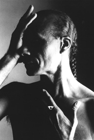

HOME FUNDEF
Carlos Orta
Carlos Orta
 El director artístico de la compañía, Carlos Orta, siempre ha estado dedicado a la búsqueda de un vehículo de expresión en la Danza Moderna en Venezuela y Latinoamérica. Sus primeros estudios comenzaron en la Escuela Folwang en Essen, Alemania, con los maestros: Hans Zullig, Jean Cebron, Pina Baush e Irene Bartos.Ha bailado en el Ballet Folwang, TanzTheatre Wuppertal y la TanzForum de Colonia.
Se ha presentado en el mundo entero y es miembro de la Limon Dance Company desde el año 1979. Como maestro, el Sr.Orta ha enseñado en numerosas residencias en América Latina, U.S.A y Europa. Él ha creado trabajos coreográficos para la Limon Dance Company, TanzForum, Netherlands Dance Company, Venezuela Ballet Nuevo Mundo, The Chamber Ballet of Caracas y Fundación Coreoarte. El repertorio de Coreoarte ofrece alrededor de 20 de sus esfuerzos creativos.
Ha recibido numerosos premios por sus coreografías:
En 1975 The Audience Prize.
En 1976 The Jary Prize de la Academia Internacional de Danza en Colonia.
En 1985 recibió el Premio Nacional de Danza por el gobierno venezolano.